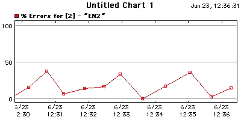

Use the Chart web page to view the selected chart.
The Map List web page shows a list of the charts associated with a particular map.
A typical Map List page. It lists the charts for the particular map.
|

[
Start |
Prev |
Next |
End ]
|
A typical chart. Click the Start, Prev, Next or End links
to show
different parts of the history.